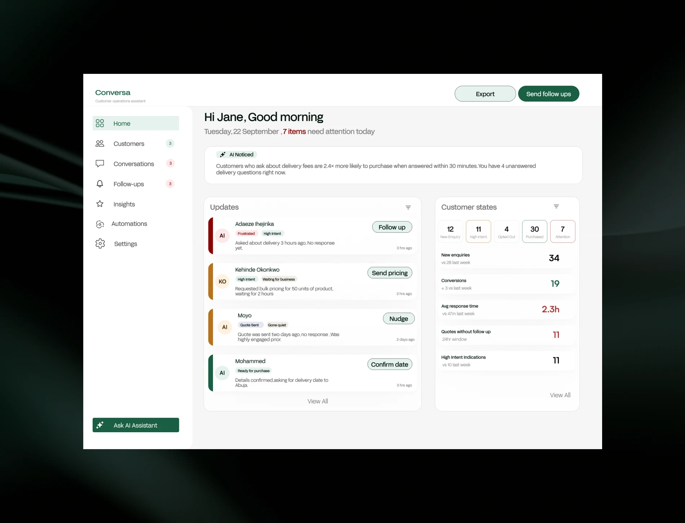

Small businesses often don't have a dedicated customer support team. I explored how an AI assistant could help business owners manage customer conversations without taking important decisions out of their hands.
For a small business owner, a customer message rarely arrives as a neat support ticket.
Behind every message, the business owner has to figure out: what does this person want? How urgent is it? Should I respond? Should I follow up? What should I say? When should I stop?
For a business with a small team, these decisions become repetitive and time-consuming. But automating them completely introduces another problem: what happens when the AI gets it wrong?
That became the core design question.
"An assistant that pretends to know more than it does isn't helpful — it's a liability."
The more interesting question was: how might AI handle routine customer conversations while knowing when to hand control back to a human?
That changed the product from a simple chat interface into a decision-support and automation system.
The user I focused on: small businesses with roughly 1–7 people, where the owner or a small team may still be directly responsible for customer communication. No dedicated customer success team. No time to constantly monitor conversations. No complex CRM infrastructure. No one reviewing every AI response.
The experience had to be simple enough to use without training — while still giving the business owner visibility and control.
I explored customer states based on what the conversation was actually indicating — so the business owner understands what needs attention, not just a list of conversations.
Initiated a conversation but hasn't expressed a clear intent yet.
Has shown meaningful interest in the product or service.
The conversation has paused, but there's a legitimate reason to follow up.
Has demonstrated a strong purchase signal.
The conversation contains signals of frustration, dissatisfaction or abandonment.
The customer's need has been addressed.
If the customer says "not interested" or "stop messaging me" — the AI stops proactive communication. No clever re-engagement. No "just checking in."
Stop means stop.
If the system cannot confidently determine what the customer wants, it shouldn't confidently invent an answer. Instead: ask a clarifying question, or escalate to the business owner.
Uncertainty becomes a visible product state — not a hidden failure.
Refund disputes. Complaints. Payment problems. Highly frustrated customers. Requests outside the business's defined rules.
The AI can identify the situation and prepare context for the owner. But the human makes the decision.
An interested customer shouldn't receive endless "just checking in 😊" messages. The business owner defines a maximum number of proactive follow-ups. Once that limit is reached, the AI stops.
Confidence becomes part of the system, not exposed AI terminology. The AI should not behave with more certainty than it has.
"Customer is asking about pricing."
"Customer may be asking about pricing, but intent is unclear."
"I don't have enough information to respond safely."
The dashboard answers: what happened? What needs my attention? What is the AI doing? Where do I need to step in?
conversations handled by AI
customers need follow-up
conversations need your attention
high-priority issue

Instead of a chat transcript, the owner sees context. They can approve, edit, take over — or stop automation entirely.
I explored failure states as core UX — not edge cases.
The AI misunderstood the customer.
The AI doesn't have enough context.
The customer's message conflicts with known business information.
The customer appears frustrated.
The customer asks not to be contacted.
This is a self-initiated concept. The value here is in the thinking behind the decision system — not production metrics. The next step would be testing the assumptions the system is built on.
Designing AI products means asking different questions than designing traditional interfaces.
Those decisions became the product.
Defined a workflow around understanding, confidence, action and escalation.
Designed interactions around intent, not simple chatbot replies.
Created explicit intervention points for business owners.
Designed uncertainty, escalation and stop conditions as core product states.
Mapped the relationship between messages, decisions, business rules and human action.
Translated an ambiguous AI opportunity into a structured concept and interaction model.